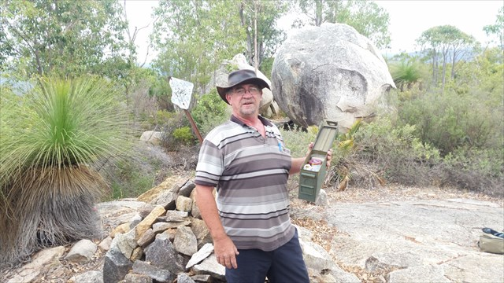

Well I'm a geocacher, what is geocaching you ask?

It's is commonly described by those in the know as using multi million dollar satellites to search for tuppaware in the bush.If you want the real answer probably best to go here geocaching.com
Some of my statistics can be found here. Granett's Stats
Back Home